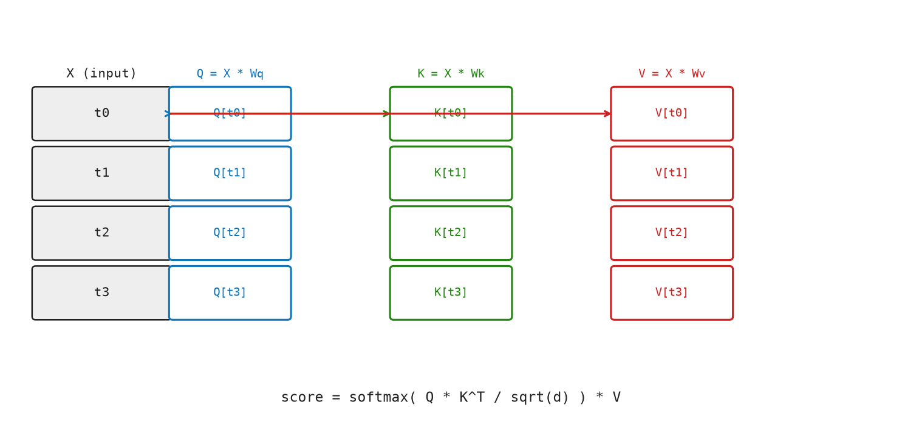
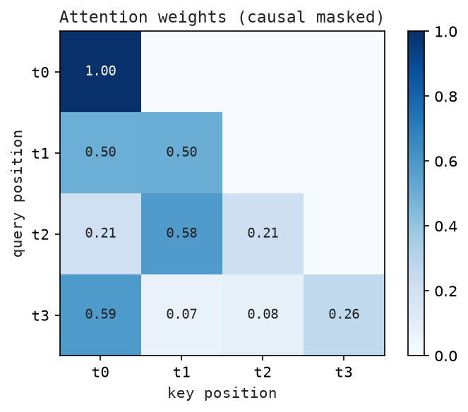

6 Attention — Tokens Talking to Each Other
Attention is the engine of the transformer. It is the mechanism that lets each token look at all (or some) of the other tokens and decide which ones to borrow information from. Without attention, each token would be processed independently, oblivious to context. With attention, the word “bank” can tell whether the surrounding tokens are about rivers or finance.
This chapter builds scaled dot-product attention from first principles.
6.1 The Idea
Imagine you are at a library. You arrive with a query: “I’m looking for books about Renaissance painting.” Every book in the library has a key on its spine — a short descriptor of its contents. You compare your query against every key, giving each book a score. Then you take a weighted blend of the books’ values (actual content) — spending more time on high-scoring books.
In the attention mechanism:
- Query (Q): “What am I looking for?” — produced from the current token.
- Key (K): “What do I contain?” — produced from every token in the sequence.
- Value (V): “What information can I give?” — produced from every token in the sequence.
The output for each token is a weighted sum of all value vectors, where the weights come from comparing that token’s query against every token’s key.
6.2 The Math
6.2.1 Step 1: Project to Q, K, V
Given input \(X \in \mathbb{R}^{T\times d}\), we learn three weight matrices:
\[ W_q \in \mathbb{R}^{d\times d_k}, \quad W_k \in \mathbb{R}^{d\times d_k}, \quad W_v \in \mathbb{R}^{d\times d_v} \]
Compute:
\[ Q = X W_q \in \mathbb{R}^{T\times d_k} \quad K = X W_k \in \mathbb{R}^{T\times d_k} \quad V = X W_v \in \mathbb{R}^{T\times d_v} \]
In standard single-head attention, \(d_k = d_v = d\).
6.2.2 Step 2: Compute Attention Scores
\[ S = Q K^{\top} / \sqrt{d_k} \in \mathbb{R}^{T\times T} \]
S[i,j] measures how relevant token j is to token i. The division by \(\sqrt{d_k}\) prevents the dot products from growing too large.
6.2.3 Step 3: Apply Causal Mask (for autoregressive models)
GPT is autoregressive: when predicting token t, it must not look at tokens t+1, t+2, …. We enforce this by masking the upper triangle:
\[ M[i,j] = \begin{cases} 0 & \text{if } j \leq i \\ -\infty & \text{if } j > i \end{cases} \]
\[ S_{\text{masked}} = S + M \]
Adding \(-\infty\) before softmax effectively zeroes out those attention weights.
6.2.4 Step 4: Softmax → Attention Weights
\[ A = \operatorname{softmax}(S_{\text{masked}}) \in \mathbb{R}^{T\times T} \]
A[i,j] is now a probability: how much token i attends to token j.
6.2.5 Step 5: Weighted Sum of Values
\[ \text{Output} = A V \in \mathbb{R}^{T\times d_v} \]
Output[i] is a weighted blend of all value vectors, guided by how much token i attends to each position.
Full formula:
\[ \operatorname{Attention}(Q, K, V) = \operatorname{softmax}\!\left( \frac{QK^{\top}}{\sqrt{d_k}} + M \right) \cdot V \]
6.3 The Matrix: Worked Example
Let T = 3 tokens, d = 4, \(d_k = d_v = 4\). Input (position-encoded):
X = [[ 1.0, 0.0, 1.0, 0.0], ← token 0: "the"
[ 0.0, 1.0, 0.0, 1.0], ← token 1: "cat"
[ 1.0, 1.0, 0.0, 0.0]] ← token 2: "sat"Weight matrices (simplified, identity-like): \(W_q = W_k = W_v = I_4\) (4×4 identity, so Q=K=V=X).
Step 1 — Q, K, V (same as X here):
Q = K = V = XStep 2 — Scores \(S = QK^{\top} / \sqrt{4}\):
QKᵀ[0,0] = [1,0,1,0]·[1,0,1,0] = 2
QKᵀ[0,1] = [1,0,1,0]·[0,1,0,1] = 0
QKᵀ[0,2] = [1,0,1,0]·[1,1,0,0] = 1
S = QKᵀ / 2 =
[[1.0, 0.0, 0.5],
[0.0, 1.0, 0.5],
[0.5, 0.5, 1.0]]Step 3 — Causal mask:
S_masked =
[[1.0, -∞, -∞], ← token 0 can only attend to itself
[0.0, 1.0, -∞], ← token 1 can attend to 0 and 1
[0.5, 0.5, 1.0]] ← token 2 can attend to allStep 4 — Softmax:
A[0] = softmax([1.0, -∞, -∞]) = [1.000, 0.000, 0.000]
A[1] = softmax([0.0, 1.0, -∞]) = [0.269, 0.731, 0.000]
A[2] = softmax([0.5, 0.5, 1.0]) = [0.211, 0.211, 0.578]Step 5 — Output = AV:
Output[0] = 1.000·V[0] = [1.0, 0.0, 1.0, 0.0]
Output[1] = 0.269·[1,0,1,0] + 0.731·[0,1,0,1] = [0.269, 0.731, 0.269, 0.731]
Output[2] = 0.211·[1,0,1,0] + 0.211·[0,1,0,1] + 0.578·[1,1,0,0]
= [0.789, 0.789, 0.211, 0.211]Token 2 (“sat”) is blending information from all three tokens, with most weight on itself.
Figure Figure 6.1 shows Q, K, and V as three separate linear projections of the same input matrix X.

Figure Figure 6.2 shows causal attention weights, where rows are queries, columns are keys, and future tokens are masked.

6.4 The Code: Scaled Dot-Product Attention in Python
def transpose(matrix: Matrix) -> Matrix:
return [list(col) for col in zip(*matrix)]transpose swaps rows and columns so attention can compare every query row with every key row.
def matrix_add(left: Matrix, right: Matrix) -> Matrix:
return [[a + b for a, b in zip(row_a, row_b)] for row_a, row_b in zip(left, right)]matrix_add adds two matrices element by element. Attention uses it to add the causal mask to the score matrix.
def matrix_scale(matrix: Matrix, scalar: float) -> Matrix:
return [[scalar * value for value in row] for row in matrix]matrix_scale multiplies every entry by the same scalar. Attention uses this for the \(1/\sqrt{d_k}\) scaling factor.
def matrix_multiply(left: Matrix, right: Matrix) -> Matrix:
right_t = transpose(right)
return [[dot(row, col) for col in right_t] for row in left]matrix_multiply computes the query-key score matrix and later the weighted sum of values.
def hstack(matrices: Sequence[Matrix]) -> Matrix:
return [sum((matrix[row] for matrix in matrices), []) for row in range(len(matrices[0]))]hstack concatenates matrices column-wise. It is used later by multi-head attention after each head has produced its own output.
def softmax(logits: Sequence[float]) -> Vector:
max_logit = max(logits)
exp_values = [math.exp(value - max_logit) for value in logits]
total = sum(exp_values)
return [value / total for value in exp_values]softmax converts a vector of raw scores into a probability distribution. It subtracts the maximum value before exponentiating to prevent overflow.
def softmax_rows(matrix: Matrix) -> Matrix:
return [softmax(row) for row in matrix]softmax_rows applies the same conversion independently to every row of the attention score matrix.
def causal_mask(size: int) -> Matrix:
return [[0.0 if j <= i else -1.0e9 for j in range(size)] for i in range(size)]causal_mask fills the upper triangle with \(-10^9\) so future tokens cannot be attended to.
def scaled_dot_product_attention(query: Matrix, key: Matrix, value: Matrix) -> tuple[Matrix, Matrix]:
d_key = shape(query)[1]
scores = matrix_scale(matrix_multiply(query, transpose(key)), 1.0 / math.sqrt(d_key))
masked_scores = matrix_add(scores, causal_mask(len(scores)))
weights = softmax_rows(masked_scores)
return matrix_multiply(weights, value), weights
def self_attention(x: Matrix, wq: Matrix, wk: Matrix, wv: Matrix) -> tuple[Matrix, Matrix]:
return scaled_dot_product_attention(
matrix_multiply(x, wq),
matrix_multiply(x, wk),
matrix_multiply(x, wv),
)scaled_dot_product_attention is a direct translation of the attention formula: scores, mask, softmax, weighted sum. self_attention first projects the same input matrix into queries, keys, and values, then calls SDPA.
Run with python3 src/python/chapter_demos.py.
6.5 Key Takeaways
- Attention asks: for each token, which other tokens are most relevant?
- Q, K, V are learned linear projections of the input.
- The attention score \(S[i,j] = Q_i \cdot K_j / \sqrt{d_k}\) measures relevance.
- Causal masking prevents tokens from seeing future positions (critical for text generation).
- The output is a soft, weighted average of value vectors.
- Full formula: \(\operatorname{Attention}(Q,K,V) = \operatorname{softmax}(QK^{\top}/\sqrt{d_k} + \text{mask}) V\).
Up next: RoPE. Attention now has queries, keys, values, scores, masks, and weighted sums. Modern GPT-style models often add one more refinement before scaling to many heads: they put position directly into the query-key comparison. That mechanism is RoPE — Chapter 7.